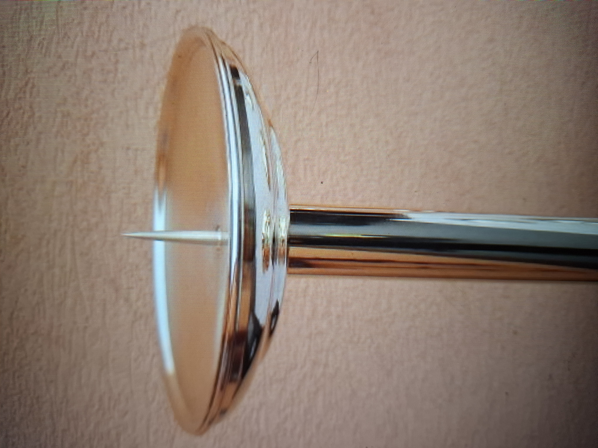

Wir fertigen und restaurieren Metallelemente für sakrale Objekte mit viel Liebe zum Detail, handwerklicher Perfektion und Respekt vor dem ursprünglichen Charakter. Jedes Stück verarbeiten wir individuell nach Vorlage oder nach historischem Original. Wir konzentrieren uns auf die Herstellung von Kerzenständern, Opferschalen, Kuppeln, Kelchen, Kreuzen, Glocken...